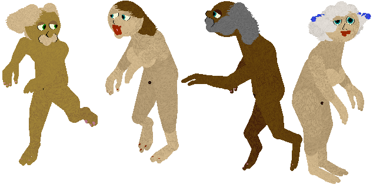

.
People to populate your petz games
~~~~~~~~~~~~~~~~~~~~~~~~~~~~~
I expect this may grow, but for now what we have are:
My "People" breedfile for the Catz games 3, 4 and 5 in LNZ form
Both PG-rated and naughty versions. If you download and use the naughty
version, I shall not be held responsible if your computer or parents
blow a fuse or i fyou end up dancing naked in the snow. Catz II version
to follow eventually. Note that this is designed to work with My "For
LNZ-files 'n' easy-edits" Calico cat packages. I did think of making
them Alleys, but what the heck -- I started with the Calico and was too
lazy to change :-)

Various people for the Petz games II, 3, 4 and 5
Go here for Babyz for dogz
Vickie of the Petz Zoo has made some babyz for the Dogz games, for which
I provided the sounds (available on my species sounds page too of
course); pop along to her site for the breed!